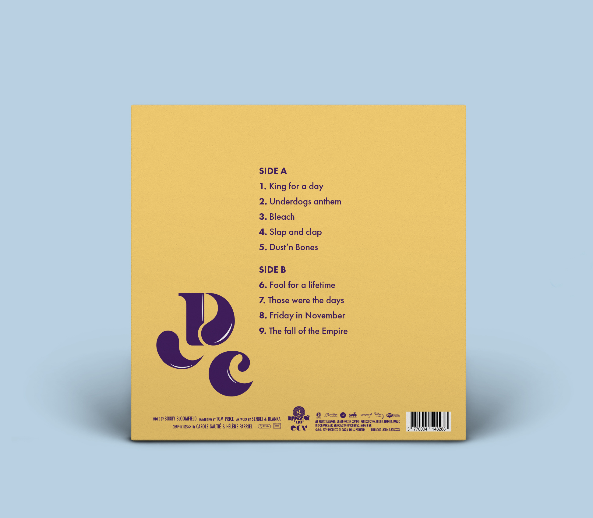
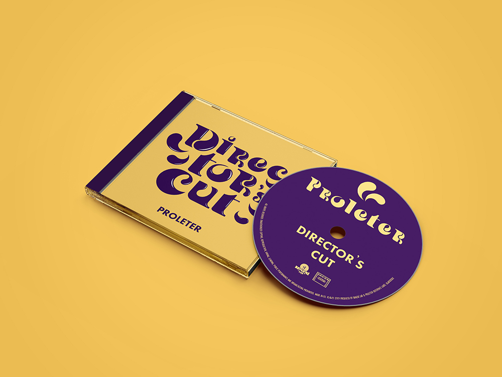
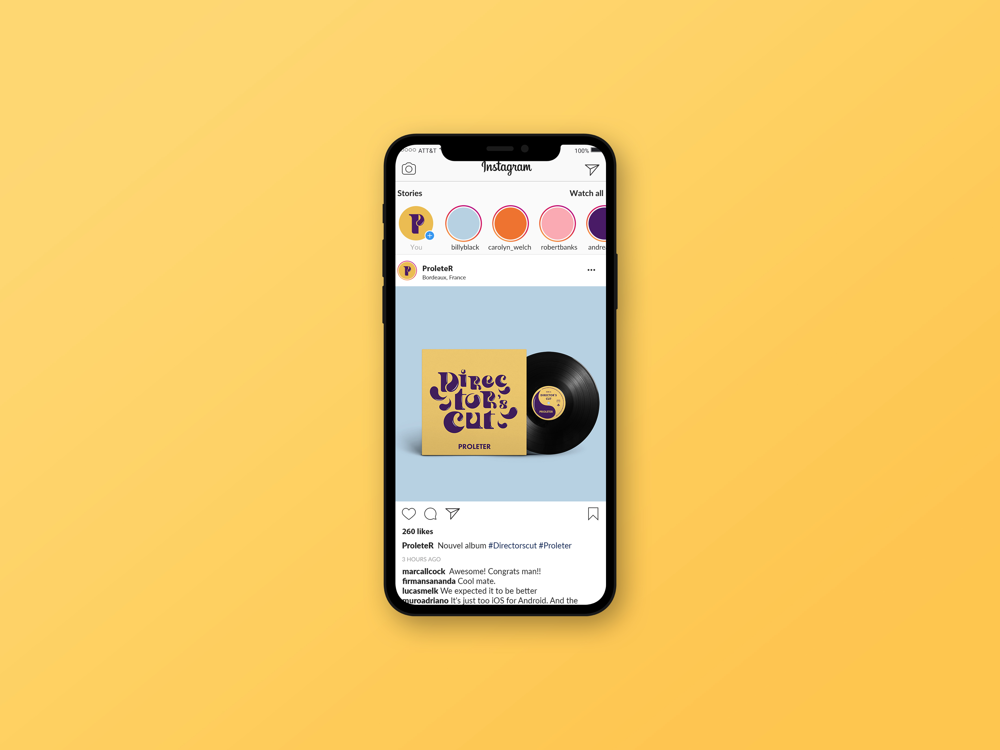
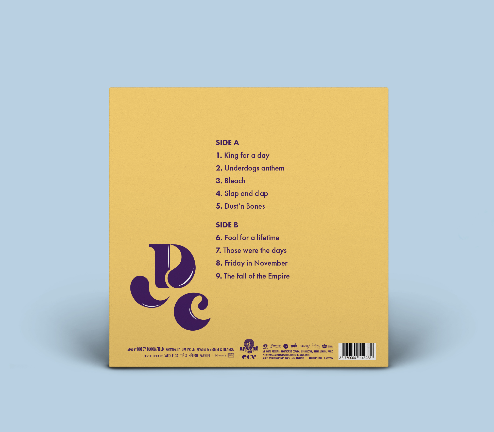
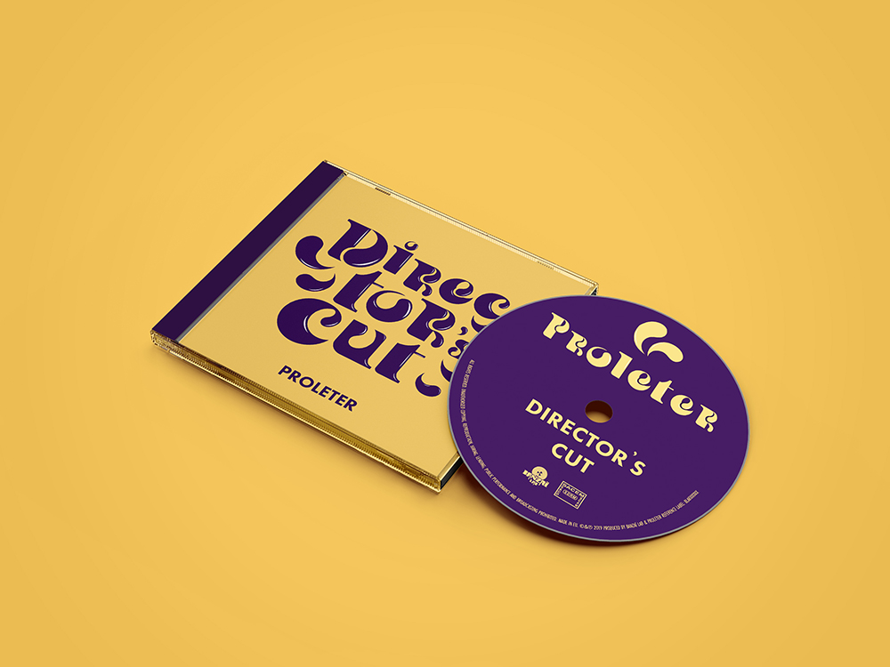
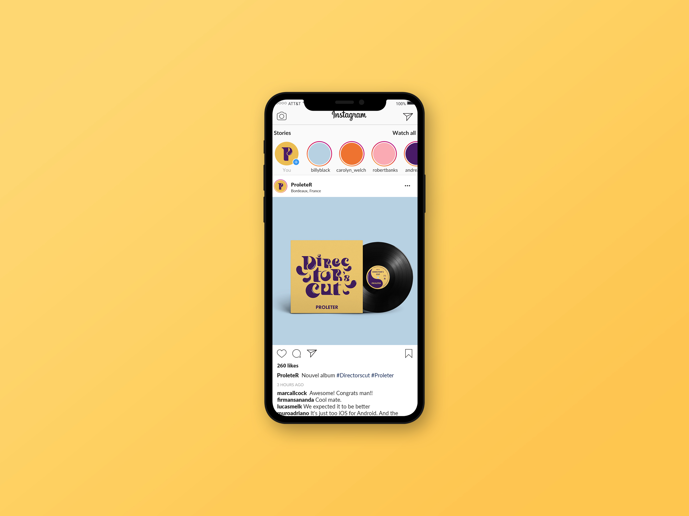

POCHETTE D'ALBUM
Director's Cut
Création typographique, d’une pochette de vynile pour quatre artistes du label bordelais Banzaï Lab et de leur communication sur les réseaux sociaux et plateformes musicales. Par un tirage au sort, nous sommes tombés sur l’artiste Proleter. C’est un mélange d’univers, où le charlestone, le jazz et l’électro swing sont présents. Nous avons dont créer à partir de ces informations, une pochette et une communication pour son album intitulé Director’s cut.